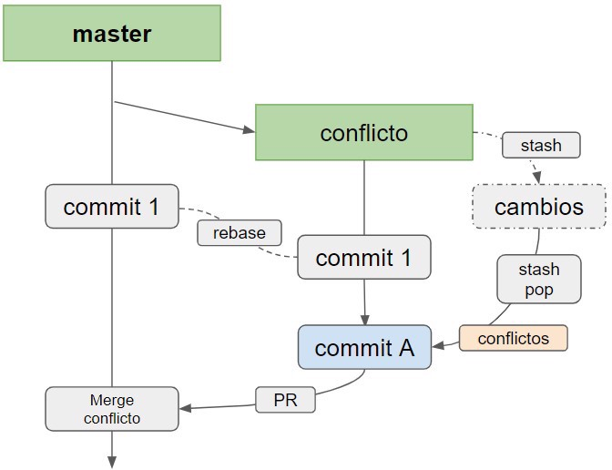
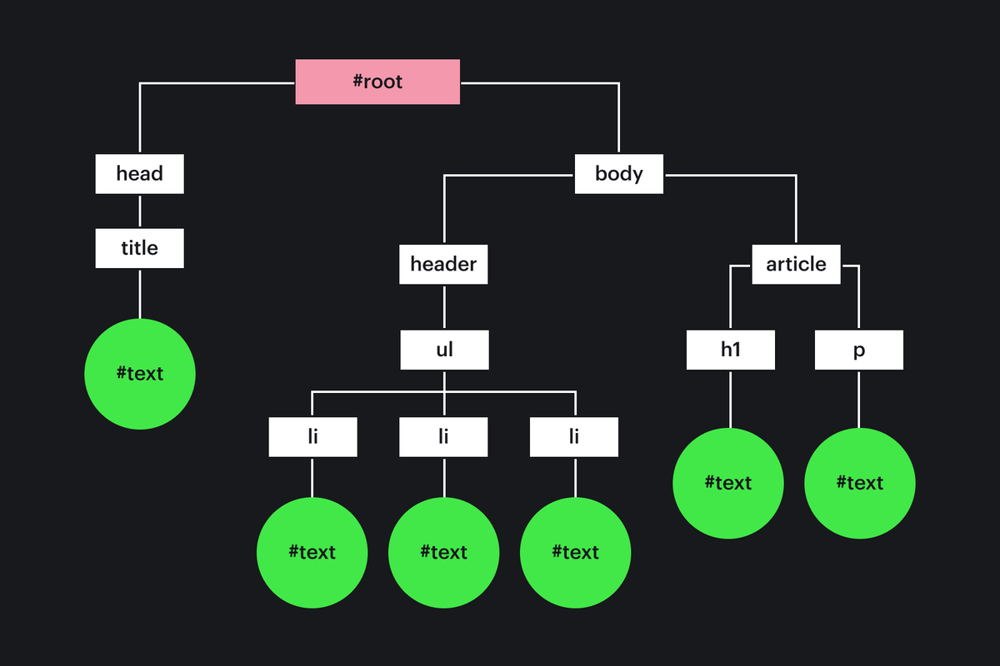
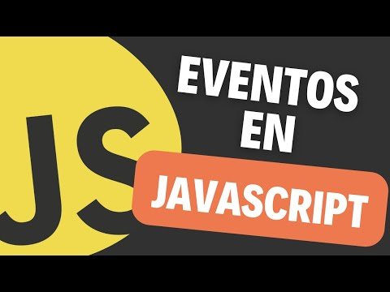
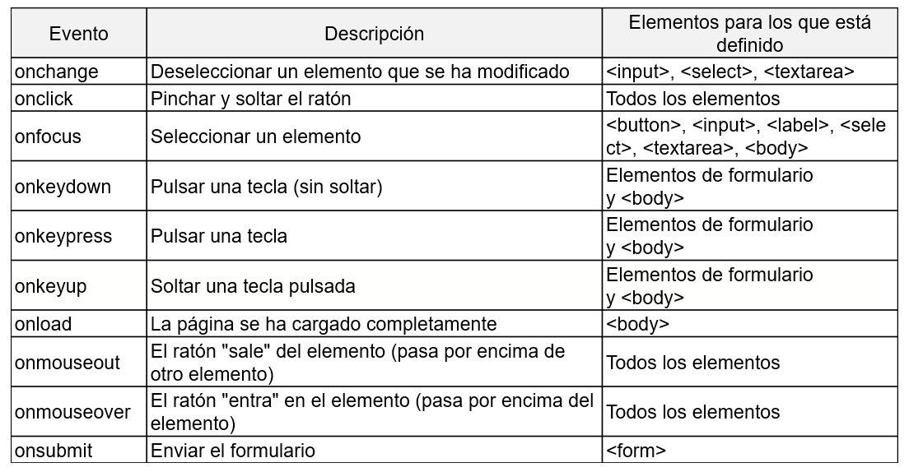

Course Checkpoint 11
¿Por qué usamos ramas de git? ¿Cuál es el comando para crear un repositorio git?
Casi todos los sistemas de control de versiones admiten ramificaciones de alguna forma. Al bifurcarse, se desvía de la línea principal de desarrollo y continúa trabajando independientemente de ella, sin interferir con la línea principal. En muchos sistemas de control de versiones, la bifurcación es un proceso muy costoso, que a menudo requiere la creación de una nueva copia del directorio fuente, lo que puede llevar mucho tiempo para un proyecto grande.
Algunas personas se refieren al modelo de ramificación de Git como una "característica excelente", que hace que Git se destaque de otros sistemas de control de versiones. ¿Qué tiene de especial? La bifurcación de Git es muy fácil: la operación de creación de una rama es casi instantánea, y el cambio entre ramas suele ser igual de rápido. A diferencia de muchos otros sistemas de control de versiones, Git fomenta un flujo de trabajo en el que las bifurcaciones y fusiones se realizan con frecuencia, incluso varias veces al día. Comprender y dominar esta funcionalidad le brinda una herramienta única y poderosa que puede cambiar por completo su forma de desarrollarse.
Acerca de la ramificación
Para comprender realmente la ramificación, es necesario volver atrás y observar cómo Git almacena los datos.
Git no almacena los datos como una secuencia de cambios, utiliza un conjunto de instantáneas (snapshot).
Cuando se hace un commit, Git lo guarda como un objeto que contiene un puntero a la instantánea (snapshot) de los datos preparados. Este objeto también contiene el nombre del autor y el email, el mensaje y el puntero al commit o commits inmediatamente anteriores a éste (sus padres): ausencia del padre para el commite original, un padre para el commite normal, y varios padres para los resultados de la fusión de dos o más ramas.
Supongamos que tiene un directorio con tres archivos y los agrega todos al índice y crea un commit. Durante la indexación, se calcula la suma de comprobación de cada archivo (SHA-1 como aprendimos de ¿Qué es Git?), luego cada archivo se guarda en el repositorio (Git llama a tal archivo blob un objeto binario grande), y la suma de comprobación cae en el índice:
$ git add README test.rb LICENSE
$ git commit -m 'Initial commit'Cuando se crea un commit con el comando git commit, Git calcula las sumas de comprobación de cada subdirectorio (en nuestro caso, sólo el directorio principal del proyecto) y lo guarda en el repositorio como un objeto de árbol de directorios. Git crea entonces un objeto commit con metadatos y un puntero en el árbol principal del proyecto para poder recrear esta instantánea si es necesario.
El repositorio Git ahora almacena cinco objetos: tres blob del objeto (uno por cada archivo), un objeto del árbol de directorios que contiene una lista de archivos y sus correspondientes blobs, y un objeto de commita que contiene metadatos y un puntero al objeto del árbol de directorios.

Figura: Commit y su árbol
Si haces un cambio y creas otro commit, entonces contendrá un puntero al commit anterior.

Figura: Commite y sus padres
Una rama en Git es un simple puntero movible a uno de estos commits. De forma predeterminada, el nombre de la rama principal en Git es master. Una vez que empiezas a crear commitas, la rama master siempre indicará el último commit. Cada vez que se crea un commit, el puntero de rama master se mueve al siguiente commit automáticamente.
La rama "master" en Git no es ninguna rama especial. Es exactamente igual que todas las otras ramas. Existe en casi todos los repositorios sólo porque es creado por el comando git init, y la mayoría de la gente no cambia su nombre.

Figura: La rama y la historia de las commitas
Crear una nueva rama
¿Qué pasa realmente cuando se crea una rama? Sólo se crea un nuevo puntero para mover más. Supongamos que desea crear una nueva rama denominada testing. Puede hacerlo con el comando git branch:
$ git branch testingComo resultado, se crea un nuevo puntero para el commit actual.

Figura: Dos ramas indican la misma secuencia de commitas
¿Cómo determina Git en qué rama se encuentra? Almacena un puntero especial HEAD. Tenga en cuenta que en Git el concepto HEAD es significativamente diferente de otros sistemas de control de versiones que podría haber utilizado antes (Subversion o CVS). En Git, es el puntero de la rama local actual. En nuestro caso, todavía estamos en la rama del maestro. El comando git branch sólo crea una rama nueva, pero no cambia a ella.

Imagen: HEAD indica una rama
Puedes verlo fácilmente con el sencillo comando git log, que te mostrará dónde te indican los punteros de las ramas. Esta opción se llama --decorate.
$ git log --oneline --decorate
f30ab (HEAD -> master, testing) Add feature #32 - ability to add new formats to the central interface
34ac2 Fix bug #1328 - stack overflow under certain conditions
98ca9 Initial commitAquí se pueden ver las ramas que apuntan al commit f30ab: master y testing.
Cambiar ramas
Para cambiar a una rama existente, ejecute el comando git checkout. Cambiemos a la rama testing:
$ git checkout testingComo resultado, el puntero HEAD se moverá a la rama de prueba.

Figura: HEAD indica la rama actual
¿Cuál es el punto? Hagamos otro commit:
$ vim test.rb
$ git commit -a -m 'made a change'
Figura: El puntero de la rama HEAD se movió hacia adelante después del commit
Una situación interesante: el puntero de la rama de testing se movió hacia adelante, y el maestro indica el mismo commit donde estabas antes de cambiar las ramas por el comando git checkout. Cambiemos de nuevo a la rama master:
$ git checkout mastergit log no muestra todas las ramas predeterminadas Si ejecuta el comando git log ahora mismo, la rama de «testing» que acaba de crear no aparecerá en su salida.
La rama no ha desaparecido en ninguna parte; simplemente Git no sabe qué es exactamente lo que le interesa y deduce la información más útil en su opinión. En otras palabras, de forma predeterminada, git log mostrará el historial de commits sólo para la rama actual.
Para ver el historial de commits de otra rama, debe especificar explícitamente su nombre: git log testing Para ver el historial en todas las ramas, ejecute el comando con una bandera adicional: git log --all.

Figura: HEAD se mueve cuando se hace el checkout
Este comando hizo dos cosas: movió el puntero HEAD hacia atrás a la rama master y devolvió los archivos del directorio de trabajo al estado cuya instantánea indica master. Esto también significa que todos los cambios realizados a partir de ese momento se referirán a la versión anterior del proyecto. En otras palabras, ha revertido todos los cambios en la rama testing y puede continuar en otra dirección.
Es importante recordar que al cambiar de rama en Git, se produce un cambio en los archivos del directorio de trabajo. Si cambia a una rama antigua, el directorio de trabajo tendrá el mismo aspecto que tenía en el momento del último commit en esa rama. Si Git por alguna razón no puede hacer esto - no le permitirá cambiar en absoluto.
Hagamos algunos cambios más y hagamos otro commit:
$ vim test.rb
$ git commit -a -m 'made other changes'Ahora la historia de su proyecto se ha separado. Creaste una rama y cambiaste a ella, trabajaste, y luego regresaste a la rama principal y trabajaste en ella. Estos cambios están aislados entre sí: puedes cambiar libremente de ida y vuelta, y cuando lo necesites, combinarlos. Y todo esto se hace por simples comandos: branch, checkout y commit.

Figura: Historia ramificada
Todas las acciones descritas se pueden visualizar con el comando git log. Para mostrar el historial de commitas, la posición actual de los punteros de rama y el historial de ramificación, ejecute el comando git log --oneline --decorate --graph --all.
$ git log --oneline --decorate --graph --all
* c2b9e (HEAD, master) Made other changes
| * 87ab2 (testing) Made a change
|/
* f30ab Add feature #32 - ability to add new formats to the central interface
* 34ac2 Fix bug #1328 - stack overflow under certain conditions
* 98ca9 initial commit of my projectUna rama en Git es un archivo simple que contiene 40 caracteres de suma de comprobación SHA-1 la commita a la que apunta; por lo tanto, las operaciones con ramas son baratas en términos de consumo de recursos o tiempo. La creación de una nueva rama en Git es tan rápida y sencilla como escribir 41 bytes en un archivo (40 caracteres y traducir una cadena).
Esto distingue fundamentalmente el proceso de ramificación en Git de los sistemas de control de versiones más antiguos, donde todos los archivos del proyecto se copian a otro subdirectorio. Dependiendo del tamaño del proyecto, las operaciones de ramificación en dichos sistemas pueden tardar segundos o incluso minutos cuando en Git estas operaciones son instantáneas. Debido a que al commit guardamos el puntero al commit parental, entonces la búsqueda de una base adecuada para fusionar ramas se hace automáticamente y, en la mayoría de los casos, es muy simple. Estas capacidades animan a los desarrolladores a crear y utilizar ramas con más frecuencia.
¿Qué es un conflicto de fusión?
Los conflictos de fusión ocurren cuando se fusionan ramas que tienen fijaciones rivales, y Git necesita su ayuda para decidir qué cambios deben incluirse en la fusión final.
Git a menudo puede resolver las diferencias entre las ramas y combinarlas automáticamente. Por lo general, los cambios se encuentran en líneas diferentes o incluso en archivos diferentes, lo que facilita la comprensión de la fusión por parte de los equipos. Sin embargo, a veces hay cambios conflictivos que Git no puede resolver sin su ayuda. A menudo, los conflictos de combinación se producen cuando los miembros realizan diferentes cambios en una línea de un archivo o cuando un miembro edita un archivo y el otro elimina el mismo archivo.
Resolución de conflictos de combinación de correspondencia
Para resolver un conflicto de combinación de correspondencia, debe editar manualmente el archivo en conflicto y seleccionar los cambios que desea guardar en la combinación de correspondencia final.
Para resolver un conflicto de combinación de correspondencia causado por cambios de línea concurrentes, debe seleccionar qué cambios de diferentes ramas incluir en la nueva confirmación.
Por ejemplo, si alguna persona redactaban el fichero styleguide.md en las mismas líneas en las ramas diferentes mismo репозитория Git, será recibida la falta del conflicto de la fusión durante la tentativa de cumplir la fusión para estas ramas. Es necesario permitir este conflicto de la fusión con la ayuda de la nueva fijación, antes de será posible cumplir la fusión para estas ramas.
1. Abra la Terminal.
2. Vaya al repositorio local de Git, donde hay un conflicto de combinación de correspondencia.
cd REPOSITORY-NAME3. Cree una lista de los archivos afectados por el conflicto de combinación de correspondencia. En este ejemplo, el archivo styleguide.md tiene un conflicto de combinación de correspondencia.
$ git status
> # On branch branch-b
> # You have unmerged paths.
> # (fix conflicts and run "git commit")
> #
> # Unmerged paths:
> # (use "git add file..." to mark resolution)
> #
> # both modified: styleguide.md
> #
> no changes added to commit (use "git add" and/or "git commit -a")4. Abra su editor de texto favorito, como Visual Studio Code, y vaya al archivo con un conflicto de combinación de correspondencia.
5. Para ver el inicio de un conflicto de fusión en un archivo, busque la etiqueta de conflicto < < < < <. Cuando abra un archivo en un editor de texto, verá los cambios desde la rama PRINCIPAL o básica después de la cadena < < < < < HEAD. A continuación, verá = = = = = = que separa sus cambios de los de otra rama y, a continuación, > > > > NOMBRE DE MARCA. En este ejemplo, una persona escribió «abrir un problema» en la rama básica o PRINCIPAL y otra escribió «hacer su pregunta en el IRC» en la rama de comparación o branch-a.
If you have questions, please
<<<<<<< HEAD
open an issue
=======
ask your question in IRC.
>>>>>>> branch-a6. Decida si desea mantener los cambios sólo en su rama, sólo en la otra rama o hacer un cambio completamente nuevo que puede incluir cambios en ambas ramas. Elimine las señales en conflicto < < < < <, = = = = = = =, > > > > > > y realice los cambios necesarios en la combinación final. En este ejemplo, ambos cambios se incluyen en la combinación final:
If you have questions, please open an issue or ask in our IRC channel if it's more urgent.7. Agregue o realice sus cambios.
git add .8. Confirme los cambios con un comentario.
git commit -m "Resolve merge conflict by incorporating both suggestions"Ahora puede combinar ramas en la línea de comandos.
Conflictos de combinación de archivos eliminados
Para resolver un conflicto de combinación de correspondencia causado por cambios concurrentes en un archivo cuando un usuario elimina un archivo de una rama y el otro edita el mismo archivo, debe seleccionar si desea eliminar o guardar el archivo eliminado en una nueva confirmación.
Por ejemplo, si ha editado un archivo como README.md y otra persona lo ha eliminado en otra rama del mismo repositorio Git, recibirá un mensaje de error de conflicto de combinación de correspondencia cuando intente fusionar esas ramas. Debe resolver este conflicto de fusión con una nueva fijación antes de que pueda realizar una fusión para estas ramas.
1. Abra la Terminal.
2. Vaya al repositorio local de Git, donde hay un conflicto de combinación de correspondencia.
cd REPOSITORY-NAME3. Cree una lista de los archivos afectados por el conflicto de combinación de correspondencia. En este ejemplo, el archivo README.md tiene un conflicto de combinación de correspondencia.
$ git status
> # On branch main
> # Your branch and 'origin/main' have diverged,
> # and have 1 and 2 different commits each, respectively.
> # (use "git pull" to merge the remote branch into yours)
> # You have unmerged paths.
> # (fix conflicts and run "git commit")
> #
> # Unmerged paths:
> # (use "git add/rm file..." as appropriate to mark resolution)
> #
> # deleted by us: README.md
> #
> # no changes added to commit (use "git add" and/or "git commit -a")4. Abra su editor de texto favorito, como Visual Studio Code, y vaya al archivo con un conflicto de combinación de correspondencia.
5. Decida si desea guardar el archivo eliminado. Es posible que tenga que ver los últimos cambios realizados en el archivo eliminado en el editor de texto.
Para volver a agregar el archivo eliminado al repositorio, siga estos pasos:
git add README.mdPara eliminar este archivo del repositorio, siga estos pasos:
$ git rm README.md
> README.md: needs merge
> rm 'README.md'Confirme los cambios con un comentario.
$ git commit -m "Resolve merge conflict by keeping README.md file"
> [branch-d 6f89e49] Merge branch 'branch-c' into branch-dAhora puede combinar ramas en la línea de comandos.
¿Qué es el DOM?

DOM (Document Object Model) es una estructura de árbol especial que permite controlar las marcas HTML desde el código JavaScript. El control suele consistir en agregar y eliminar elementos, modificar sus estilos y contenido.
El navegador crea un DOM al cargar una página, la pliega en una variable de documento e informa que el DOM se ha creado, mediante el evento DOMContentLoaded. Con la variable document, se inicia cualquier trabajo de marcado HTML en JavaScript.
El objeto document contiene un gran número de propiedades y métodos que le permiten trabajar con HTML. Los métodos más utilizados son los que permiten encontrar elementos de página.
En qué consiste el DOM
Una página HTML son etiquetas anidadas entre sí. Por ejemplo:
<!DOCTYPE html>
<head>
<title> Cuenta personal </title>
</head>
<body>
<header>
<ul class="menu">
<li> Inicio </li>
<li> Artículos </li>
<li> Contactos </li>
</ul>
</header>
<article id="12">
<h1> ¿Cómo aprender javascript? </h1>
<p> Debe comenzar a aprender. </p>
</article>
</body>El explorador convierte esta marca en una vista JavaScript, manteniendo al mismo tiempo el anidamiento y las propiedades de cada elemento HTML. Esto se logra con una estructura de datos especial, un árbol.
Cada etiqueta representa un nodo de árbol. Cada nodo puede tener nodos secundarios, por lo que se guarda la información de anidamiento de etiquetas. Es cierto que la palabra etiqueta en este contexto no utiliza y dice el elemento. Por ejemplo, el código HTML anterior se convertirá en tal árbol:
El árbol se compone de nodos convencionales y de texto. Los nodos comunes son etiquetas HTML y los nodos de texto son texto dentro de las etiquetas.
El nodo normal se llama Elemento y contiene una descripción de la etiqueta, los atributos de la etiqueta y los manejadores. Si cambia la descripción, también cambiará el código HTML de este elemento (es posible que algo incluso cambie en la pantalla. Por ejemplo, si cambia el color de fuente). En el artículo Element, analizamos todo lo necesario para trabajar con los elementos.
Cualquier nodo tiene un nodo padre e hijos. Nodo padre: el elemento en el que está anidado el nodo actual sólo puede ser uno. Hijos: nodos anidados en el nodo actual.
getElementById: busca un elemento por ID.
Método de objeto document que permite encontrar un elemento en una página Web por su ID (atributo id). Devuelve Element o null si no se ha encontrado nada.
El ejemplo
<html>
<body>
<h1 id="title">¡Hola, extraño!</h1>
<script>
let title = document.getElementById("title");
console.log(title.textContent);
//Imprimirá "¡Hola, extraño!"
</script>
</body>
</html>
El método funciona con DOM, que está asociado con el marcado HTML. Si hay una etiqueta con el atributo id en HTML, puede obtenerla de JavaScript utilizando el método getElementById ().
La especificación HTML requiere que, dentro de una página, los valores de los atributos id sean únicos. Debido a esto y funciona el método getElementById () - un elemento con el identificador buscado o uno, o no. Esta búsqueda funciona muy rápidamente.
getElementsByClassName: busca elementos por nombre de clase
El método se define para el objeto document y cualquier elemento HTML (Elemento) de la página. Le permite encontrar todos los elementos con una clase o clases especificadas entre los hijos.
El método acepta un parámetro: el nombre de la clase o la lista de clases como una cadena. Si pasa la lista de clases, divida sus nombres en espacios: class1 class2. El elemento es adecuado si tiene todas las clases de las enumeradas.
Devuelve un arreglo de discos HTMLCollection con los elementos encontrados. Si no hay elementos, la colección estará vacía, es decir, con un tamaño de 0.
El ejemplo
<body>
<div id="title">
<h1>¡Hola, extraño!</h1>
<div class="paragraph subtitle">amb con la clase paragraph y subtitle</div>
</div>
<p class="paragraph">Párrafo con la clase paragraph</p>
</body>
const paragraphs = document.getElementsByClassName('paragraph')
console.log(paragraphs.length)
// 2
const divEl = document.getElementById('title')
// Buscamos párrafos dentro de dev
const paragraphsFromDiv = divEl.getElementsByClassName('paragraph')
console.log(paragraphsFromDiv.length)
// 1, ya que sólo hay un elemento con la clase paragraph dentro de div
const subtitleParagraphs = document.getElementsByClassName(
'paragraph subtitle'
)
console.log(subtitleParagraphs.length)
// 1, ya que sólo hay un elemento en la página,
// que tiene tanto la clase paragraph como la clase subtitle
// Buscamos un elemento inexistente
const spanFromBody = document.getElementsByClassName('hello')
console.log(spanFromBody.length)
// 0El método funciona con DOM, que está asociado con el marcado HTML. Cada elemento HTML tiene elementos padre e hijo.
Los elementos padre son aquellos dentro de los cuales se encuentra el elemento. En el ejemplo anterior, el elemento h1 tiene dos elementos primarios, div y body.
Los elementos secundarios son los que contiene el elemento actual. Pueden serlo, o no. Por ejemplo, para la etiqueta body, todos los elementos de la página son secundarios. h1 elemento secundario: texto dentro de la etiqueta.
Si trabaja con la raíz de la página, el objeto document, la búsqueda se realiza en todos los elementos de la página, es decir, desde body. Si la búsqueda proviene de un elemento en particular, sólo se realiza a través de sus elementos secundarios.
Como no sabemos de antemano cuántos elementos con la etiqueta buscada se encontrarán, el método devuelve una colección de elementos.
Cada elemento HTML puede tener una o más clases. Cuando se utiliza getElementsByClassName (), la búsqueda sólo se realiza en clases (atributo class). Se ignoran los nombres de las etiquetas y todos los demás atributos.
getElementsByTagName - Buscar elementos por nombre de etiqueta
El método se define para el objeto document y cualquier elemento HTML (Elemento) de la página. Permite encontrar todos los elementos con la etiqueta especificada entre los hijos. Devuelve un arreglo de discos HTMLCollection con los elementos encontrados. Si no hay elementos, la colección estará vacía, es decir, con un tamaño de 0.
El ejemplo
El método acepta un parámetro: el nombre de la etiqueta como una cadena. Por ejemplo, div, form, h5.
<body>
<div id="title">
<h1>¡Hola, extraño!</h1>
<p>Este es el párrafo, hijo de ambos, y para el cuerpo</p>
</div>
<p>Este es el párrafo hijo de body</p>
</body>
const pFromBody = document.getElementsByTagName('p')
console.log(pFromBody.length)
// 2
const divEl = document.getElementById('title')
// Buscamos párrafos dentro de div
const pFromDiv = divEl.getElementsByTagName('p')
console.log(pFromDiv.length)
// 1, ya que sólo hay un p en el interior de div
// Buscamos un elemento inexistente
const spanFromBody = document.getElementsByTagName('span')
console.log(spanFromBody.length)
// 0El método funciona con DOM, que está asociado con el marcado HTML. Cada elemento HTML tiene elementos padre e hijo.
Los elementos padre son aquellos dentro de los cuales se encuentra el elemento. En el ejemplo anterior, el elemento h1 tiene dos elementos primarios, div y body.
Los elementos secundarios son los que contiene el elemento actual. Pueden serlo, o no. Por ejemplo, para la etiqueta body, todos los elementos de la página son secundarios. h1 elemento secundario: texto dentro de la etiqueta.
Si trabaja con la raíz de la página, el objeto document, la búsqueda se realiza en todos los elementos de la página, es decir, desde body. Si se trata de un elemento específico, la búsqueda sólo se realiza a través de sus elementos secundarios.
Como no sabemos de antemano cuántos elementos con la etiqueta buscada se encontrarán, el método devuelve una colección de elementos.
querySelector: busca el primer elemento adecuado para el selector CSS
El método se define para el objeto document y cualquier elemento HTML (Elemento) de la página. Permite encontrar un elemento por selector CSS entre los hijos. Si hay más de un elemento, el primero es adecuado. Si no hay elementos adecuados, volverá nulo.
El método acepta un parámetro: el selector CSS como una cadena. Si no se pasa el selector CSS, el sistema desechará el error. Por ejemplo, puede seleccionar el primer elemento dentro de div:
<body>
<div>
<p>
El príncipe Basilio hablaba siempre perezoso, como dice el actor el papel
de la vieja pías. Anna Pavlovna Scherer, por el contrario, a pesar de sus
cuarenta años, fue estimulantes e impulsos.
</p>
<p>
Ser entusiasta se ha convertido en su posición pública, y a veces cuando
ella ni siquiera quería, ella, para no engañar las expectativas de la
gente que sabía ella, estaba haciendo un entusiasmo. Una sonrisa discreta
que jugaba constantemente en su rostro Anna Pavlovna, aunque no caminó
hacia sus rasgos extinguidos, expresó como la de niños mimados, la
conciencia constante de su lindo defecto, de que ella no quiere, no puede
y no encuentra necesario corregir.
</p>
</div>
<p>Este es el párrafo hijo de body</p>
<script>
const firstParagraph = document.querySelector("div > p");
console.log(firstParagraph.textContent);
//imprimirá el texto que comienza con 'Príncipe Basilio'
//buscamos un elemento inexistente
const spanFromBody = document.querySelector("span");
console.log(spanFromBody);
// null
</script>
</body>
El método funciona con DOM, que está asociado con el marcado HTML. Cada elemento HTML tiene elementos padre e hijo:
Los padres son elementos que contienen el elemento actual. En el ejemplo anterior, el primer elemento p tiene dos elementos primarios, div y body.
Los elementos secundarios son los que contiene el elemento actual. Pueden serlo, o no. Por ejemplo, para la etiqueta body, todos los elementos de la página son secundarios. p elemento secundario: texto dentro de la etiqueta.
Si se trabaja con la raíz de la página, el objeto document, entonces la búsqueda se realiza a través de todos los elementos de la página (desde body), si de un elemento en particular, entonces la búsqueda se realiza sólo a través de todos los hijos.
querySelectorAll: busca todos los elementos adecuados para el selector CSS
El método se define para el objeto document y cualquier elemento HTML (Elemento) de la página. Permite encontrar todos los elementos por selector CSS entre los hijos. El selector CSS se pasa como parámetro. Este método se utiliza muy a menudo en el trabajo.
Devuelve una colección NodeList estática similar a la matriz con los elementos encontrados. Si no hay elementos, la colección estará vacía, es decir, con un tamaño de 0.
El método acepta un parámetro: el selector CSS como una cadena. Por ejemplo, puede seleccionar todos los elementos que se encuentran dentro de dev
<body>
<div>
<p>
El príncipe Basilio hablaba siempre perezoso, como dice el actor el papel
de la vieja pías. Anna Pavlovna Scherer, por el contrario, a pesar de sus
cuarenta años, fue estimulantes e impulsos.
</p>
<p>
Ser entusiasta se ha convertido en su posición pública, y a veces cuando
ella ni siquiera quería, ella, para no engañar las expectativas de la
gente que sabía ella, estaba haciendo un entusiasmo. Una sonrisa discreta
que jugaba constantemente en su rostro Anna Pavlovna, aunque no caminó
hacia sus rasgos extinguidos, expresó como la de niños mimados, la
conciencia constante de su lindo defecto, de que ella no quiere, no puede
y no encuentra necesario corregir.
</p>
</div>
<p>Este es el párrafo hijo de body</p>
<script>
const paragraphs = document.querySelectorAll("div>p");
console.log(paragraphs.length);
// 2
//buscamos un elemento inexistente
const spanFromBody = document.querySelectorAll("span");
console.log(spanFromBody.length);
// 0
</script>
</body>
El método funciona con DOM, que está asociado con el marcado HTML. Cada elemento HTML tiene elementos padre e hijo:
Los padres son elementos que contienen el elemento actual. En el ejemplo anterior, el primer elemento p tiene dos elementos primarios, div y body.
Los elementos secundarios son los que contiene el elemento actual. Pueden serlo, o no. Por ejemplo, para la etiqueta body, todos los elementos de la página son secundarios. p elemento secundario: texto dentro de la etiqueta.
Si se trabaja con la raíz de la página (objeto de documento), la búsqueda se realiza en todos los elementos de la página (desde body), si es de un elemento en particular, la búsqueda se realiza únicamente en todos los elementos secundarios.
¿Qué es un escuchador de eventos?
Algunos programas funcionan con entrada de usuario, ratón y teclado. No se puede predecir de antemano el momento en que se produce dicha entrada y la secuencia de datos. Esto requiere un enfoque diferente para controlar el orden de ejecución del programa que el que ya conocemos.
Los elaboradores de los acontecimientos
Imagine una interfaz en la que la única manera de saber si el botón del teclado ha sido presionado sería leyendo el estado actual del botón. Para responder a los clics, tendrías que leer constantemente los estados de los botones para que puedas capturar este estado hasta que el botón se apriete. Sería peligroso realizar otros recuentos que lleven tiempo de procesador, ya que se podría perder el momento de pulsar.
De esta manera, la entrada se procesaba en dispositivos primitivos. Un paso adelante sería si el hierro o la sala de operaciones notaran presionar un botón y lo pasaran a la cola. A continuación, el programa podría revisar periódicamente la cola de nuevos eventos y responder a lo que está en la cola.
Sin duda, debe recordar de la comprobación, y hacerlo bastante a menudo, porque la presencia del intervalo largo del tiempo entre la presión del botón y, cuando el programa nota y reacciona a esto, conduce a la percepción de este programa como que trabaja despacio. Tal acceso se llama en la encuesta. La mayoría de los programadores lo evitan en la medida de lo posible. Tal acceso se usa bastante raramente.
Una variante mejor es una especie de sistema intermedio que permite que el código responda a los eventos en el momento en que ocurren. Los navegadores permiten esto registrando las funciones como manejadores de eventos dados.
<p>Haga clic en el documento para iniciar el controlador.</p>
<script>
addEventListener("click", function() {
console.log(«¡Clic!»);
});
</script>
La función addEventListener registra su segundo argumento como una función que se llama cuando sucede un evento descrito en el primer argumento.
Eventos y nodos DOM
Cada controlador de eventos del navegador está registrado en el contexto. Cuando llama a addEventListener, lo llama como un método de ventana completa, porque en el navegador, el área de visibilidad global es el objeto window. Cada elemento DOM tiene su propio método addEventListener que le permite escuchar eventos de este elemento.
<button>Presióname suavemente.</button>
<p>No hay controladores aquí.</p>
<script>
var button = document.querySelector("button");
button.addEventListener("click", function() {
console.log("Botón presionado".);
});
</script>
En el ejemplo se asigna un controlador al nodo DOM del botón. Al hacer clic en el botón se inicia el controlador y al hacer clic en otras partes del documento no se inicia.
La asignación de un nodo de atributo onclick funciona de forma similar. Pero el nodo sólo tiene un atributo onclick, lo que significa que de esta manera sólo se puede registrar un manejador. El método addEventListener le permite agregar cualquier número de manejadores, de modo que no reemplace a un manejador previamente asignado accidentalmente.
El método removeEventListener, llamado con los mismos argumentos que addEventListener, elimina el controlador.
<button>Act-once button</button>
<script>
var button = document.querySelector("button");
function once() {
console.log("Done.");
button.removeEventListener("click", once);
}
button.addEventListener("click", once);
</script>
Para comprobar esto, le damos a la función un nombre (en este caso, once) para que pueda ser transferido tanto a addEventListener como a removeEventListener.
Objetos de evento
En los ejemplos, ignoramos el hecho de que a los manejadores de funciones se les pasa un argumento, el objeto del evento. Almacena más información sobre el evento. Por ejemplo, si necesitas saber qué botón del ratón se ha pulsado, podemos consultar la propiedad which de este objeto.
<button>¡Muéstrame lo que quieras!</button>
<script>
var button = document.querySelector("button");
button.addEventListener("mousedown", function (event) {
if (event.which == 1) console.log("Izquierda");
else if (event.which == 2) console.log("Medio");
else if (event.which == 3) console.log("Derecha");
});
</script>
La información almacenada en el objeto es diferente para cada tipo de evento. Discutiremos estos tipos más adelante. La propiedad type del objeto siempre contiene una cadena que describe el evento (por ejemplo, «click» o «mousedown»).
Distribución (propagation)
Los eventos registrados en los nodos que tienen nodos hijos también recibirán algunos eventos que les ocurrieron a sus hijos. Si hace clic en el botón dentro del párrafo, los controladores de eventos del párrafo recibirán el evento click.
Si tanto el párrafo como el botón tienen manejadores, el primero en iniciar será el más específico, es decir, el manejador del botón. El evento se propaga hacia afuera, desde el nodo donde ocurrió hasta su padre y más allá hasta la raíz del documento. Después de haber probado todos los manejadores de todos los nodos intermedios, la cola para reaccionar al evento también llega a la propia ventana.
En cualquier momento, el manejador puede llamar al método stopPropagation del objeto de evento para que los nodos «superiores» no lo reciban. Esto puede ser útil cuando tiene un botón dentro de otro elemento de clic y no desea que los clics del botón activen el comportamiento del elemento externo.
En el siguiente ejemplo se registran los manejadores «mousedown» tanto en el botón como en el párrafo circundante. Al hacer clic con el botón derecho, el controlador de botón llama a stopPropagation, lo que impide que el controlador de párrafo se inicie. Al hacer clic en el otro botón, se inician ambos controladores.
<p>Párrafo con el botón.</p>
<script>
var para = document.querySelector("p");
var button = document.querySelector("button");
para.addEventListener("mousedown", function () {
console.log("Manejador de párrafos");
});
button.addEventListener("mousedown", function (event) {
console.log("Controlador de botón");
if (event.which == 3) event.stopPropagation();
});
</script>
La mayoría de los objetos de evento tienen una propiedad target que hace referencia al nodo que inició el procesamiento. Se puede utilizar para verificar que no está manejando algo que vino de un nodo innecesario para usted.
También es posible utilizar la propiedad target para propagar el procesamiento de un tipo de evento específico. Por ejemplo, si tiene un nodo que contiene una larga lista de botones, sería más conveniente registrar un solo controlador de eventos para el nodo, y en él averiguar si el botón ha sido presionado - en lugar de registrar los manejadores de cada botón individualmente.
<button>A</button>
<button>B</button>
<button>C</button>
<script>
document.body.addEventListener("click", function (event) {
if (event.target.nodeName == "BUTTON")
console.log("Clicked", event.target.textContent);
});
</script>
Acciones predeterminadas
Muchos eventos tienen acciones predeterminadas. Al hacer clic en el enlace, lo seguirás. Al hacer clic en la flecha hacia abajo, el navegador se desplazará hacia abajo. Con el clic derecho del ratón, verá el menú contextual. Y así sucesivamente.
Para la mayoría de los tipos de eventos, los controladores de eventos se invocan antes de que la acción predeterminada funcione. Si el manejador no quiere que se produzca esta acción (a menudo porque ya la ha procesado), puede llamar al método preventDefault del objeto de evento.
Esto se puede utilizar para crear sus teclas de acceso rápido o menú contextual. También se puede utilizar para romper la interfaz familiar del usuario. Por ejemplo, aquí hay un enlace por el que no puedes pasar.
<a href="https://developer.mozilla.org/">MDN</a>
<script>
var link = document.querySelector("a");
link.addEventListener("click", function (event) {
console.log("Фигушки.");
event.preventDefault();
});
</script>
¡No lo hagas a menos que tengas una razón muy seria! Los usuarios de su página se sentirán muy incómodos cuando se enfrenten a los resultados inesperados de sus acciones. Dependiendo del navegador, algunos eventos no pueden ser interceptados. En Chrome, no se pueden procesar las teclas de acceso rápido de cierre del marcador actual (Ctrl-W or Command-W).
Eventos de botones de teclado
Al hacer clic en un botón del teclado, el navegador inicia el evento «keydown». Cuando se libera, se produce un evento «keyup».
<p>La página al hacer clic en V se muestra.</p>
<script>
addEventListener("keydown", function (event) {
if (event.keyCode == 86) document.body.style.background = "violet";
});
addEventListener("keyup", function (event) {
if (event.keyCode == 86) document.body.style.background = "";
});
</script>
A pesar del nombre, «keydown» no ocurre solo cuando se presiona el botón. Si presiona y mantiene pulsado el botón, el evento se producirá cada vez que llegue una señal repetida de la tecla (key repeat). Si usted, por ejemplo, tiene que aumentar la aceleración del personaje de juego cuando se presiona el botón de flecha y reducirlo cuando se suelta - debe tener cuidado de no aumentar la aceleración cada vez que se repite la señal del botón, de lo contrario la velocidad aumentará mucho.
En el ejemplo se menciona la propiedad keyCode del objeto de evento. Así que puede averiguar exactamente qué botón está pulsado o liberado. Desafortunadamente, no siempre es obvio cómo convertir los códigos numéricos en el botón deseado.
Para los números y letras, el código será el código del símbolo Unicode asociado al carácter mayúsculo representado en el botón. El método de línea charCodeAt nos da este código.
console.log("Violet".charCodeAt(0));
// → 86
console.log("1".charCodeAt(0));
// → 49En otros botones, los códigos son menos predecibles. La mejor manera de averiguarlos es experimentando. Registre el controlador que escribe los códigos de teclado y presione el botón que desee.
Los botones modificadores como Mayús, Ctrl, Alt, y Meta (Comando en Mac) crean eventos, al igual que los botones normales. Pero al analizar las combinaciones de teclas, puede averiguar si se presionaron los modificadores, a través de las propiedades shiftKey, ctrlKey, altKey, y metaKey de los eventos de teclado y ratón.
<p>Pulse Ctrl-Space para continuar.</p>
<script>
addEventListener("keydown", function (event) {
if (event.keyCode == 32 && event.ctrlKey) console.log("¡Continuemos!");
});
</script>
Los eventos «keydown» y «keyup» proporcionan información sobre la pulsación física de los botones. ¿Y si necesita saber qué texto escribe el usuario? Crearlo a partir de pulsaciones de botón es incómodo. Para ello, existe un evento "keypress' que ocurre justo después de" keydown "(y se repite junto con" keydown "si la tecla sigue manteniendo pulsada), pero sólo para aquellos botones que emiten caracteres. La propiedad del objeto de evento charCode contiene código que se puede interpretar como código Unicode. Podemos usar la función String.fromCharCode para convertir el código en una cadena de un solo carácter.
<p>Ponga el enfoque en la página e imprima.</p>
<script>
addEventListener("keypress", function (event) {
console.log(String.fromCharCode(event.charCode));
});
</script>
El nodo se convierte en la fuente del evento de pulsación de tecla, dependiendo de dónde se encontraba el foco de entrada durante la pulsación. Los nodos normales no pueden obtener un enfoque de entrada (a menos que les haya establecido un atributo tabindex), y pueden hacerlo, como vínculos, botones y campos de formulario.
